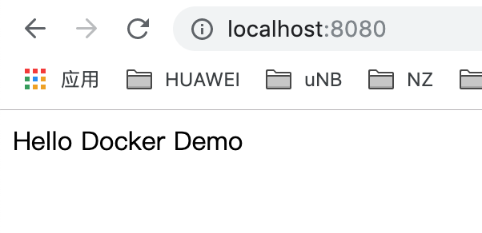
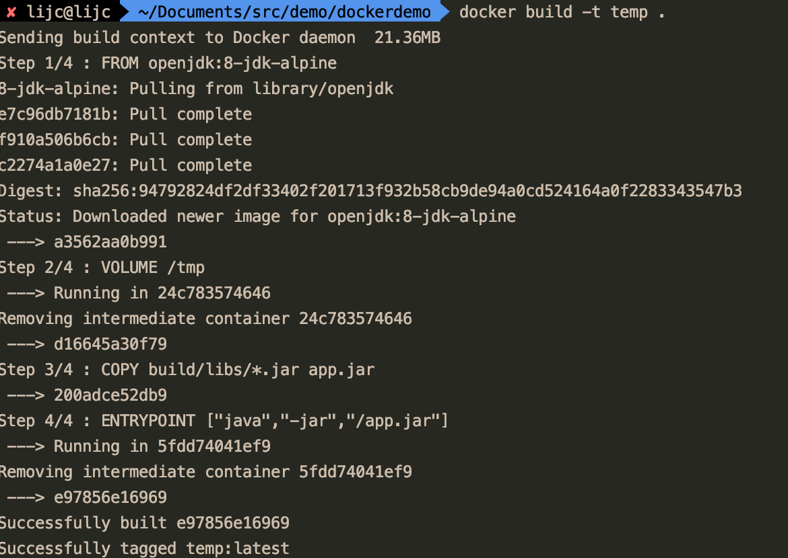
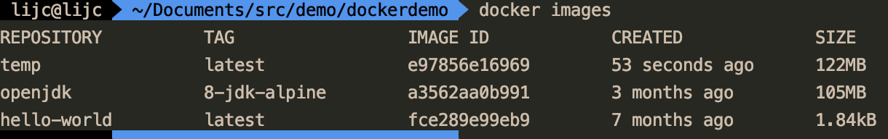
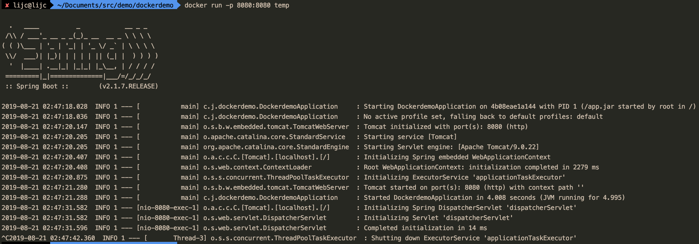

Docker plays a vital role in the Devops world, it can help us to deliver applications more easily. This blog will show how to start up a Spring Boot application in Docker.
Foreword
Docker plays a vital role in the Devops world, it can help us to deliver applications more easily. This blog will show how to start up a Spring Boot application in Docker.
What is Docker?
Docker is a opensource containerisation platform designed to make it easier to create , deploy and run various applications by using containers. Docker containers wrap up a piece of software into a complete file system that contains everything the software needs to run.
Why using Docker?
If you ever try to deploy an application which is developed in other OS, you were probably blocked with a lot of configuration errors or exceptions. Docker can help you to get rid of these problems, as a container, it basically consists of an entire runtime environment, which includes an application with all its dependencies, like libraries and other binaries, and even the configuration files needed to run it, all bundled into one package. Hence, by containerising the differences in operating system distributions, the underlying infrastructure is abstracted away. Containers encapsulate all the discrete components of application logic which are provisioned, that too with the minimal resources needed to do their job.
How to use Docker?
1. Create a Spring Boot application
We can try to use Gradle this time, here is build.gradle:
1 | plugins { |
Create a simple controller:
1 | package com.jincheng.dockerdemo; |
Start up we can visit this simple API:

2. Deploy with Docker
2.1 Create a Dockfile:
1 | FROM openjdk:8-jdk-alpine |
This Dockerfile is very simple, but that’s all you need to run a Spring Boot app with no frills: just Java and a JAR file. The project JAR file is ADDed to the container as “app.jar” and then executed in the ENTRYPOINT.
2.2 Build a Docker Image
Add new plugin in Gradle:
1 | buildscript { |
The configuration specifies 4 things:
a task to unpack the fat jar file
the image name (or tag) is set up from the jar file properties, which will end up here as springio/gs-spring-boot-docker
the location of the unpacked jarfile, which we could have hard coded in the Dockerfile
a build argument for docker pointing to the jar file
You can build a tagged docker image and then push it to a remote repository with Gradle in one command:
1 | ./gradlew build docker |
Or use the docker build:

Then use docker images command we can see the image we built:

2.3 Run the image

we can also visit our API in the image:
3. Docker push and optimize
To be continued